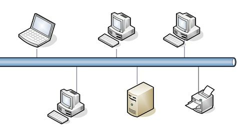
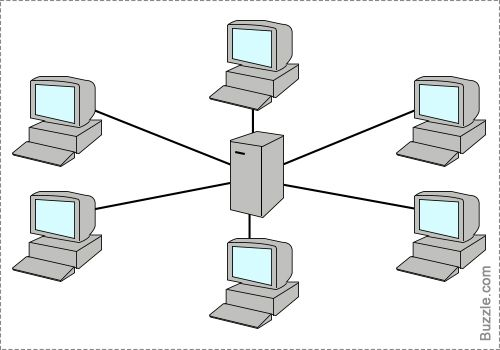
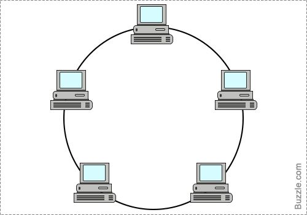
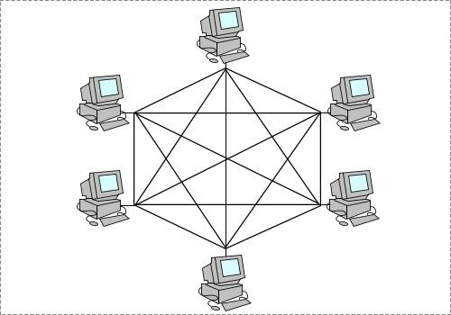
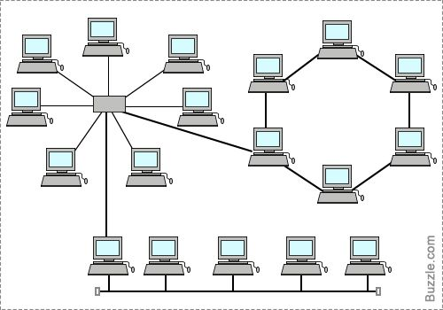

Network Topologies
What is a Network Topology?
A network topology is the physical or logical arrangement of devices in a computer network. It defines how computers, devices, and cables are connected and interact with each other.
Bus Topology
In a bus topology, all devices are connected to a single central cable. It's easy to install but can be difficult to troubleshoot. If the main cable fails, the entire network is affected.
Star Topology
Each device is connected to a central hub or switch. It’s the most common topology in LANs. If one cable fails, only that device is affected. However, if the hub fails, the entire network goes down.
Ring Topology
Devices are connected in a circular manner. Data travels in one direction until it reaches its destination. It's easy to identify faults but if one device fails, it can disrupt the entire network unless it's a dual ring.
Mesh Topology
Every device is connected to every other device. It provides high redundancy and reliability, making it ideal for critical systems, but it's expensive and complex to set up and manage.
Hybrid Topology
A combination of two or more topologies, such as star-bus or star-ring. It leverages the benefits of multiple structures but may involve higher costs and more complex setups.
Choosing the Right Topology
Factors to consider include network size, budget, scalability, fault tolerance, and performance needs. For home and small businesses, star topologies are commonly used due to their simplicity and reliability.